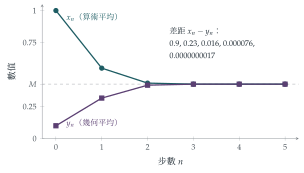

STEP II 2024，第 8 題
繼續之前，請先閱讀題目（原題為英文）。題目載於 OCR 提供下載的 2024 年 STEP 試卷（zip 檔案）內的 STEP II 試卷： www.ocr.org.uk/Images/725753-2024-past-papers.zip
引子
取兩個正數，例如 \(\sqrt2\) 和 \(1\)。把它們換成兩者的算術平均（arithmetic mean）和幾何平均（geometric mean）。再做一次，然後再做一次。結果如下：
| \(n\) | \(x_n\)（算術） | \(y_n\)（幾何） |
|---|---|---|
| 0 | \(1.4142135623730950488\) | \(1\) |
| 1 | \(1.2071067811865475244\) | \(1.1892071150027210667\) |
| 2 | \(1.1981569480946342956\) | \(1.1981235214931201226\) |
| 3 | \(1.1981402347938772091\) | \(1.1981402346773072058\) |
| 4 | \(1.1981402347355922074\) | \(1.1981402347355922074\) |
只需四步，兩個數便有二十位小數完全相同。它們的共同極限（limit）就是算術幾何平均（arithmetic–geometric mean，簡稱 AGM）\(M(\sqrt2, 1) = 1.19814\ldots\)
1799 年 5 月 30 日，年僅 21 歲的高斯（Carl Friedrich Gauss）在日記中寫道，他發現 \(1/M(\sqrt2, 1)\) 與一個常數有十一位小數相同，而這個常數出自一個完全不同的問題：一條稱為雙紐線（lemniscate）的曲線的弧長。他寫道：「這必定會開闢一個全新的分析領域。」事實果然如此。本題要證明的，正是高斯這項發現背後的關鍵事實：AGM 能求出一個用任何常規方法都計算不了的積分。
動筆之前
為甚麼兩個不相等的正數的算術平均，總是大於它們的幾何平均？你能用一行證明嗎？
這就是算術幾何平均不等式（AM–GM inequality），而第 (i) 部分的提示正好給出這個一行證明：當 \(x \neq y\) 時，\(\bigl(\sqrt{x} - \sqrt{y}\bigr)^2 > 0\)，展開後便是 \(x + y > 2\sqrt{xy}\)。第 (i) 部分的一切，都由這個不等式，以及「每個平均都介乎原來兩個數之間」這個事實推出。
逐步解題
階段 1 兩個數列互相夾緊
若 \(y_n < x_n\)，則 \(\sqrt{x_n} \neq \sqrt{y_n}\)，所以 \(x_n - 2\sqrt{x_n y_n} + y_n > 0\)，即 \(x_{n+1} > y_{n+1}\)。由於 \(y_0 < x_0\)，用歸納法（induction）可知對所有 \(n\) 都有 \(y_n < x_n\)。
為甚麼 \(x_n\) 與 \(y_n\) 的算術平均小於 \(x_n\)，而幾何平均大於 \(y_n\)？
因為 \(y_n < x_n\)：\(x_{n+1} = \frac{x_n + y_n}{2} < \frac{x_n + x_n}{2} = x_n\)，而 \(y_{n+1} = \sqrt{x_n y_n} > \sqrt{y_n y_n} = y_n\)。所以 \[y_0 < y_1 < y_2 < \cdots < x_2 < x_1 < x_0.\] \(y_n\) 遞增，並以 \(x_0\) 為上界（bounded above），所以根據題目所給的定理，它趨向一個極限 \(M\)。
至於兩者的差距， \[x_{n+1} - y_{n+1} < x_{n+1} - y_n = \frac{x_n + y_n}{2} - y_n = \frac12(x_n - y_n),\] 而由第一部分可知它是正數。所以差距每次至少減半：\(0 < x_n - y_n < (x_0 - y_0)/2^n\)，而後者趨向 \(0\)。
最後，\(x_n = y_n + (x_n - y_n)\) 是一個趨向 \(M\) 的數列與一個趨向 \(0\) 的數列之和，所以 \(x_n \to M\) 亦成立。■
階段 2 代換
這個代換（substitution）看來無緣無故，但它其實經過精心設計，令根號下的兩個括號都變成完全平方（或接近完全平方）。
設 \(t = \frac12\left(x - \frac{pq}{x}\right)\)，計算 \(t^2 + pq\)。然後計算 \(t^2 + \frac14(p + q)^2\)。兩者之中，有沒有哪一個可以漂亮地因式分解？
首先， \[t^2 + pq = \frac14\left(x^2 - 2pq + \frac{p^2q^2}{x^2}\right) + pq = \frac14\left(x + \frac{pq}{x}\right)^2.\] 其次， \[\begin{aligned} t^2 + \tfrac14(p + q)^2 &= \frac14\left(x^2 - 2pq + \frac{p^2q^2}{x^2} + p^2 + 2pq + q^2\right) \\ &= \frac{x^4 + (p^2 + q^2)x^2 + p^2q^2}{4x^2} = \frac{(x^2 + p^2)(x^2 + q^2)}{4x^2}. \end{aligned}\] 另外 \(\dfrac{\mathrm{d}t}{\mathrm{d}x} = \dfrac12\left(1 + \dfrac{pq}{x^2}\right) = \dfrac{x^2 + pq}{2x^2}\)。
把以上結果合起來。當 \(x\) 由 \(0\) 走到 \(\infty\) 時，\(t\) 怎樣變化？關於 \(t\) 的積分會變成甚麼？
當 \(x\) 由 \(0\) 增加至 \(\infty\) 時，\(t\) 由 \(-\infty\) 遞增至 \(\infty\)（因為它的導數是正數）。對 \(x > 0\)， \[\sqrt{\bigl(t^2 + \tfrac14(p+q)^2\bigr)\bigl(t^2 + pq\bigr)} = \frac{\sqrt{(x^2+p^2)(x^2+q^2)}}{2x} \cdot \frac{x^2 + pq}{2x},\] 所以 \[\frac{\mathrm{d}t}{\sqrt{\cdots}} = \frac{x^2 + pq}{2x^2} \cdot \frac{4x^2}{(x^2 + pq)\sqrt{(x^2+p^2)(x^2+q^2)}}\,\mathrm{d}x = \frac{2\,\mathrm{d}x}{\sqrt{(x^2+p^2)(x^2+q^2)}}.\] 因此關於 \(t\) 的積分等於 \(2\,\mathrm{I}(p, q)\)。
另一方面，關於 \(t\) 的積分與 \(\mathrm{I}\) 的形式完全一樣，只是 \(p\) 和 \(q\) 分別換成了 \(\frac12(p+q) = \mathrm{a}(p, q)\) 和 \(\sqrt{pq} = \mathrm{g}(p, q)\)，而且積分範圍是整條實數線。被積函數（integrand）是 \(t\) 的偶函數（even function），所以關於 \(t\) 的積分等於 \(2\,\mathrm{I}\bigl(\mathrm{a}(p,q), \mathrm{g}(p,q)\bigr)\)。兩者比較，得 \[\mathrm{I}(p, q) = \mathrm{I}\bigl(\mathrm{a}(p, q), \mathrm{g}(p, q)\bigr). \qed\]
階段 3 求積分的值
由 \((x_0, y_0)\) 開始，反覆應用這個恆等式。經過 \(n\) 步之後，\(\mathrm{I}(x_0, y_0)\) 等於甚麼？當 \(n \to \infty\) 時又會怎樣？
對每個 \(n\)，\(\mathrm{I}(x_0, y_0) = \mathrm{I}(x_1, y_1) = \mathrm{I}(x_2, y_2) = \cdots = \mathrm{I}(x_n, y_n)\)。當 \(n \to \infty\) 時，兩個變數都趨向 \(M\)，而 \[\mathrm{I}(M, M) = \int_0^\infty \frac{\mathrm{d}x}{M^2 + x^2} = \left[\frac1M \arctan\frac{x}{M}\right]_0^\infty = \frac{\pi}{2M}.\] 所以 \[\mathrm{I}(x_0, y_0) = \frac{\pi}{2M}. \qed\]
題目容許我們直接接受「\(\mathrm{I}(x_n, y_n) \to \mathrm{I}(M, M)\)」這一步，但其實可以簡潔地加以證明。把 \(p\) 或 \(q\) 增大，被積函數便會變小，而 \(y_n < x_n\)，所以 \[\frac{\pi}{2x_n} = \mathrm{I}(x_n, x_n) < \mathrm{I}(x_n, y_n) < \mathrm{I}(y_n, y_n) = \frac{\pi}{2y_n}.\] 上下兩個界都趨向 \(\frac{\pi}{2M}\)，而對每個 \(n\)，\(\mathrm{I}(x_n, y_n)\) 都是同一個數 \(\mathrm{I}(x_0, y_0)\)，所以它必定等於 \(\frac{\pi}{2M}\)。這又是一次夾逼（squeeze），與 第 2.4 節 中的做法一樣。

回顧
兩個單調數列互相夾緊。一個上升，一個下降，而兩者的差距縮小至零。要證明兩個數列有共同極限，這是最乾淨利落的方法。
不變量（invariant）。\(\mathrm{I}(x_n, y_n)\) 這個量在每一步都保持不變。在其他一切都在變動時，找出某樣固定不變的東西，是數學中最有力的想法之一。
巧妙的代換是設計出來的，不是猜出來的。選用這個代換，正是為了令根號下的式子可以因式分解。
背後的數學
第 (i) 部分證明了差距每一步至少減半，這相當於每一步大約多得一個二進制位。引子中的表格所顯示的卻驚人得多：正確位數每一步大約增加一倍（\(2, 4, 10, 21, 43, \ldots\)）。事實上 \[x_{n+1} - y_{n+1} = \frac12\bigl(\sqrt{x_n} - \sqrt{y_n}\bigr)^2 = \frac{(x_n - y_n)^2}{2\bigl(\sqrt{x_n} + \sqrt{y_n}\bigr)^2},\] 所以每個差距大約是一個常數乘以前一個差距的平方。這稱為二次收斂（quadratic convergence），我們會在 第 2.7 節 中仔細探討。
橢圓積分
我們的積分 \(\mathrm{I}(p, q)\) 其實是一個喬裝了的完全橢圓積分（complete elliptic integral）。這類積分在計算橢圓的弧長時出現，而且不能用你所認識的函數表示。它最著名的應用是單擺。高級程度（A-level）課程中的週期公式 \(T = 2\pi\sqrt{L/g}\) 只是小幅度擺動時的近似。由角度 \(\theta_0\) 釋放的單擺，其準確週期是 \[T = \frac{2\pi\sqrt{L/g}}{M\bigl(1, \cos\frac{\theta_0}{2}\bigr)},\] 這是一個可用 AGM 求值的橢圓積分。當 \(\theta_0 = 90^\circ\) 時，真正的週期比簡單公式所預測的長約 \(18\%\)。高斯那則日記所談的是雙紐線，一條 8 字形的曲線，它的總弧長涉及 \(\int_0^1 \frac{\mathrm{d}t}{\sqrt{1-t^4}}\)；這個積分其實就是喬裝了的 \(\mathrm{I}(\sqrt2, 1)\)，所以可以用 AGM 求值。
計算 \(\pi\)
1976 年，Richard Brent 與 Eugene Salamin 各自獨立地把高斯的想法變成一個計算 \(\pi\) 的算法（algorithm），每一步都令正確位數增加一倍。二十五步便可得出數千萬位。在 1980 及 1990 年代，這類算法曾用於多次刷新紀錄的 \(\pi\) 計算；時至今日，凡是需要高精度的地方，類似的二次收斂算法已成為標準工具。試比較 第 2.5 節 中的韋達（Viète）乘積，它每一步只多得約 \(0.6\) 位。
思維技巧
當一個過程同時改變許多東西時，找出一個不變的量。然後在過程的終點求它的值，因為那裏一切都很簡單。
在這裏，過程就是 AGM 的每一步，而不變量就是積分 \(\mathrm{I}\)。在過程的終點，兩個變數相等，積分變成初等積分。不變量在數學中隨處可見，由力學中的能量守恆（第 10 章），以至證明某些謎題無解。
延伸練習
二次收斂。證明恆等式 \(x_{n+1} - y_{n+1} = \dfrac{(x_n - y_n)^2}{2(\sqrt{x_n} + \sqrt{y_n})^2}\)，並由此推出 \(x_{n+1} - y_{n+1} \leq \dfrac{(x_n - y_n)^2}{8 y_0}\)。
親手計算。用計算機求 \(M(2, 1)\)，準確至六位小數。你需要多少步？
縮放。證明對 \(\lambda > 0\) 有 \(M(\lambda x, \lambda y) = \lambda M(x, y)\)，以及 \(\mathrm{I}(\lambda p, \lambda q) = \lambda^{-1}\mathrm{I}(p, q)\)。驗證這兩個事實與 \(\mathrm{I}(x_0, y_0) = \pi/(2M)\) 互相吻合。
單擺。利用上面的公式，求由 \(60^\circ\) 釋放的單擺的週期比小角度近似的預測值長多少，答案準確至三位有效數字。
延伸閱讀
David Cox, “The arithmetic–geometric mean of Gauss”, L’Enseignement Mathématique 30 (1984)。講述這段歷史和有關數學的經典文章；開首幾節只需要微積分知識。
Jonathan Borwein & Peter Borwein, Pi and the AGM (Wiley)。關於 AGM 與 \(\pi\) 的快速計算的權威著作。
Jonathan Borwein & Keith Devlin, The Computer as Crucible (A. K. Peters)。講述實驗數學，包括像高斯那樣憑着留意數值上的巧合而得出的發現。